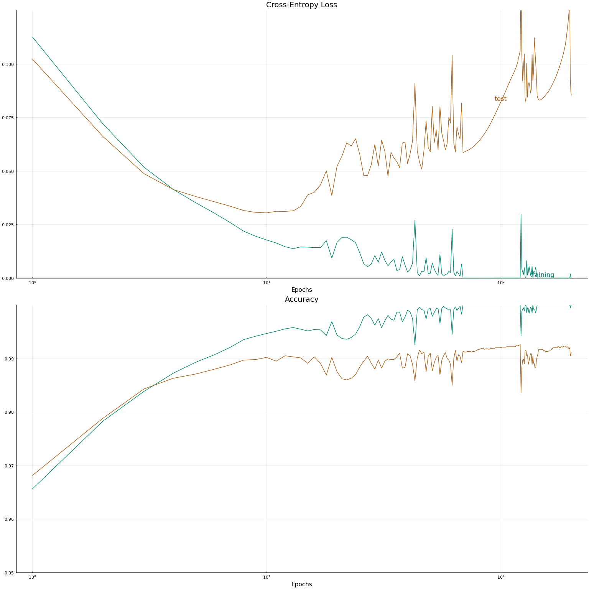
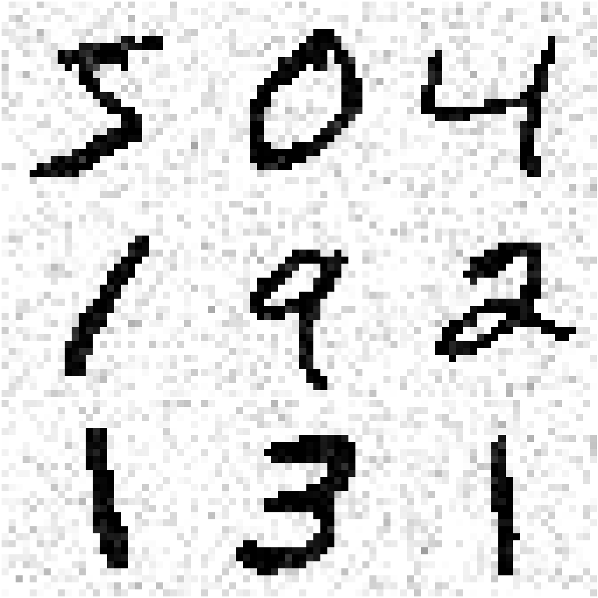

This work is licensed under a Creative Commons Attribution-ShareAlike 4.0 International License
About this document¶
This document was created using Weave.jl. The code is available in on github. The same document generates both static webpages and associated jupyter notebook.
Introduction¶
The previous notes discussed multiple layer feedforward networks, and applied them to image classification. However, state-of-art image classifiers typically do not use feedforward networks. They use convolutional networks, which will be the topic of this document. Convolutional neural networks also have applications to PDEs, see (???). They also have potential applications to time series and spatial data.
Additional Reading¶
- Goodfellow, Bengio, and Courville (2016) Deep Learning especially chapter 9
Knet.jldocumentation especially the textbook- Klok and Nazarathy (2019) Statistics with Julia:Fundamentals for Data Science, MachineLearning and Artificial Intelligence
Convolutions¶
A convolution is an operation on a set of functions. If $f:\R \to \R$ and $g:\R \to \R$, then their convolution is The convolution is commutative, $(f\ast g)(x) = (g\ast f)(x)$. For functions with other domains, convolutions can be defined analogously. For example, for $f, g: \Z \to \R$,
Kernel density estimation and regression are convolutions. For example, the kernel density estimator can be written as where $\delta_{x_i}(t)$ is the Dirac measure at $x_i$.
Convolutions appear in image processing as blurring and smoothing filters. Taking a local average of pixels is a convolution.
 Image source:
https://hackernoon.com/visualizing-parts-of-convolutional-neural-networks-using-keras-and-cats-5cc01b214e59
Image source:
https://hackernoon.com/visualizing-parts-of-convolutional-neural-networks-using-keras-and-cats-5cc01b214e59
The similarity to kernel regression should be obvious. The 3x3 matrix
1 0 1
0 1 0
1 0 1
in the animation above is called a stencil or a kernel.
In addition to blurring and smoothing, convolutions can detect patterns
in images. For example 1 × 2 filters of [-1 1] and [1, -1] will pick
out vertical transitions from dark to light and vice versa.
Here’s an illustration of how this looks using an image from the MNIST data.
using Flux.Data.MNIST
using ImageFiltering
using Plots
imgs = MNIST.images()
labels = MNIST.labels()
i = 1
plot(plot(Gray.(1) .- imgs[i], title="Original"),
plot(RGB.(1 .- imfilter(imgs[i], centered([-1 1])),
1 .- imgs[i],
1 .- imfilter(imgs[i], centered([1 -1]))),
title="Vertical edge filters"),
layout=(1, 2)
)

From this example, we see that small hand-crafted convolution kernels can pick out patterns, like edges. One idea would be to use the output of these kernels as features in a machine learning model. Another idea is to treat the weigths in a convolution matrix as part of the model to be estimated. This is exactly what convolutional neural networks do.
Example : MNIST¶
Let’s see how convolutional neural networks can be applied to the MNIST data.
The code in this section was adapted from the Flux model zoo.
using Flux, Flux.Data.MNIST, Statistics
using Flux: onehotbatch, onecold, crossentropy, throttle, @epochs
using Base.Iterators: repeated, partition
using CuArrays
using BSON: @save, @load
using ColorSchemes
cscheme = colorschemes[:BrBG_4];
When we were fitting feed-forward networks with this data, we simply treated images as vetors of length $28^2$. That was appropriate there because the model we were using did not explicitly utilize spacial information. With convolutions, we need to preserve spatial information, so we need to treat the images as $28 \times 28$ arrays.
# set up training and testing data
createx(imgdata) = reduce((x,y)->cat(x,y, dims=4),
reshape.(float.(imgdata),28,28, 1) )
X = Float32.(gpu(createx(imgs)));
Y = onehotbatch(labels, 0:9) |> gpu;
tX = Float32.(gpu(createx(MNIST.images(:test))));
tY = onehotbatch(MNIST.labels(:test), 0:9) |> gpu;
When working with convolutions, Flux.jl wants the data to be stored as
a $K_1 \times K_2 \times C \times N$ array where $K_1 \times K_2$ is the
dimension of the images (or whatever else the data represents), $C$ is
the number of channels. Since we have grayscale images, we have one
channel. Color images would have three channels. Radar and satellite
imagery can have more channels (satellites often collect non-visible
frequencies of light).
Chanels are also a useful abstraction throughout the neural network. We usually want to apply multiple convolution filters to extract different features of the images. The output of each convolution is stored in a channel.
Each convolution is intended to pick up some local pattern in the image. It might be useful to modify certain pattens by applying an activation function to the output of the convolution.
Finally, convolutions detect patterns, but for many image classification
tasks, we do not necessarily care exactly where a pattern occurs. A cat
remains a a cat wherever it is located in a picture. Motivated by this,
a “pooling” operation is often applied to the output of convolutions.
These are similar to convolutions with fixed weights. Common pooling
operations include taking the average within a rectangle of fixed size
and taking the maximum. Pooling (and convolution) can reduce dimension
by only looking at non-overlapping (or partially non-overlapping)
regions. In Flux.jl the default for convolutions is to look at every
pixel, and the default for pooling is to look at non-overlapping
regions. This behavior can be changed by changing the stride option.
Mathematically, we can express a convolutional layer as follows. Let $x$ be an $N \times N$ input channel, $\psi$ be an activation function, $b \in \R$ is a bias, and $w$ be $M \times M$ convolution weights, indexed from -M/2 to M/2.
The result of applying the convolution is: where if an index is out-of-bounds simply set that term in the sum to $0$. $P$ is the “padding”. If $P=M/2$, then the size of $x\ast w$ is the same as $x$. If $P<M/2$, the convolution decreases the size of the image. Then if we apply a maximum pooling function with dimension $D \times D$, we get a $N/D \times N/D$ array with elements
The following code defines a convolutional network with three convolutional layers followed by a dense feed-forward layer for the output.
model = Chain(
# First convolution layer, operating upon a 28x28 image
Conv((3, 3), 1=>16, pad=(1,1), relu),
MaxPool((2,2)),
# Second convolution, operating upon a 14x14 image
Conv((3, 3), 16=>32, pad=(1,1), relu),
MaxPool((2,2)),
# Third convolution, operating upon a 7x7 image
Conv((3, 3), 32=>32, pad=(1,1), relu),
MaxPool((2,2)),
# Reshape 3d tensor into a 2d one, at this point it should be (3, 3, 32, N)
# which is where we get the 288 in the `Dense` layer below:
x -> reshape(x, :, size(x, 4)),
Dense(288, 10),
# Finally, softmax to get nice probabilities
softmax
) |> gpu
# count parameters
nparam(m::Chain)=sum(nparam.(m))
nparam(m::Conv)=length(m.weight) + length(m.bias)
nparam(m::Dense)=length(m.W)+length(m.b)
nparam(m) = 0
println("There $(nparam(model)) parameters")
There 16938 parameters
Now, let’s train the model.
function train_mnist!(model, X, Y, tX, tY,
modelname;
loss = (x,y)->crossentropy(model(x), y),
accuracy = (x,y)->mean(onecold(model(x)) .== onecold(y)),
batchsize=length(tY),
reps_per_epoch=1,
maxepochs=200,
rerun=false
)
Xsmall = X[:,:,:,1:1000]
Ysmall = Y[:,1:1000]
evalcb = () -> @show(loss(Xsmall, Ysmall), loss(tX,tY), accuracy(Xsmall,Ysmall), accuracy(tX,tY))
parts=Base.Iterators.partition(1:size(X,ndims(X)), batchsize);
batches = [(X[:,:,:,p], Y[:,p]) for p in parts];
data = repeat(batches, reps_per_epoch);
function sumloss(batches)
L = zero(Float32)
for i in 1:length(batches)
L += Tracker.data(loss(batches[i]...))
end
L /= length(batches)
end
function acc(batches)
L = zero(Float32)
for i in 1:length(batches)
L += accuracy(batches[i]...)
end
L /= length(batches)
end
opt = ADAM(0.001)
epochs = 200
acctest = zeros(maxepochs)
acctrain = zeros(maxepochs)
losstest = zeros(maxepochs)
losstrain = zeros(maxepochs)
@info("Beginning training loop...")
best_acc = 0.0
last_improvement = 0
e = 0
docdir = joinpath(dirname(Base.pathof(NeuralNetworkEconomics)), "..","docs")
while e<maxepochs
e += 1
modelfile = joinpath(docdir,"jmd","bson","$modelname-$e-epochs.bson")
if rerun || !isfile(modelfile)
println("Beginning epoch $e")
@time Flux.train!(loss, params(model), data, opt, cb = throttle(evalcb, 20))
# save model
cpum = cpu(model)
losstrain[e]= sumloss(batches)
acctrain[e] = acc(batches)
losstest[e]=Tracker.data(loss(tX,tY))
acctest[e] =accuracy(tX,tY)
@save modelfile cpum losstrain acctrain losstest acctest
else
@load modelfile cpum losstrain acctrain losstest acctest
model = gpu(cpum)
end
println("Finished $e epochs")
if (acctest[e]>best_acc)
best_acc = acctest[e]
last_improvement=e
end
# If we haven't seen improvement in 5 epochs, drop our learning rate:
if e - last_improvement >= 5 && opt.eta > 1e-6
opt.eta /= 10.0
@warn(" -> Haven't improved in a while, dropping learning rate to $(opt.eta)!")
# After dropping learning rate, give it a few epochs to improve
last_improvement = e
end
if e - last_improvement >= 10 && opt.eta <= 1e-6
@warn(" -> At epoch $e, haven't improved in 15 epochs. Stopping training.")
break
end
end
return(model=model,
losstrain=losstrain[1:e], acctrain=acctrain[1:e],
losstest=losstest[1:e], acctest=acctest[1:e])
end
out = train_mnist!(model, X, Y, tX, tY, "conv";
batchsize=10000,
reps_per_epoch=2,
maxepochs=200,
rerun=true
)
Beginning epoch 1
loss(Xsmall, Ysmall) = 3.8307793f0 (tracked)
loss(tX, tY) = 3.7646885f0 (tracked)
accuracy(Xsmall, Ysmall) = 0.113
accuracy(tX, tY) = 0.1175
41.519491 seconds (74.34 M allocations: 3.782 GiB, 13.99% gc time)
Finished 1 epochs
Beginning epoch 2
loss(Xsmall, Ysmall) = 2.139317f0 (tracked)
loss(tX, tY) = 2.1163933f0 (tracked)
accuracy(Xsmall, Ysmall) = 0.282
accuracy(tX, tY) = 0.2701
9.292017 seconds (1.29 M allocations: 42.853 MiB, 32.14% gc time)
Finished 2 epochs
Beginning epoch 3
loss(Xsmall, Ysmall) = 1.5374417f0 (tracked)
loss(tX, tY) = 1.5081782f0 (tracked)
accuracy(Xsmall, Ysmall) = 0.576
accuracy(tX, tY) = 0.5857
9.240499 seconds (1.29 M allocations: 42.787 MiB, 31.05% gc time)
Finished 3 epochs
Beginning epoch 4
loss(Xsmall, Ysmall) = 1.0786622f0 (tracked)
loss(tX, tY) = 1.0492115f0 (tracked)
accuracy(Xsmall, Ysmall) = 0.738
accuracy(tX, tY) = 0.75
9.293508 seconds (1.29 M allocations: 42.787 MiB, 31.32% gc time)
Finished 4 epochs
Beginning epoch 5
loss(Xsmall, Ysmall) = 0.7076205f0 (tracked)
loss(tX, tY) = 0.6952387f0 (tracked)
accuracy(Xsmall, Ysmall) = 0.832
accuracy(tX, tY) = 0.8284
9.316706 seconds (1.29 M allocations: 42.787 MiB, 31.56% gc time)
Finished 5 epochs
Beginning epoch 6
loss(Xsmall, Ysmall) = 0.48908913f0 (tracked)
loss(tX, tY) = 0.47920617f0 (tracked)
accuracy(Xsmall, Ysmall) = 0.868
accuracy(tX, tY) = 0.8722
9.359895 seconds (1.29 M allocations: 42.787 MiB, 31.33% gc time)
Finished 6 epochs
Beginning epoch 7
loss(Xsmall, Ysmall) = 0.3699671f0 (tracked)
loss(tX, tY) = 0.3573693f0 (tracked)
accuracy(Xsmall, Ysmall) = 0.899
accuracy(tX, tY) = 0.9012
9.296906 seconds (1.29 M allocations: 42.788 MiB, 31.04% gc time)
Finished 7 epochs
Beginning epoch 8
loss(Xsmall, Ysmall) = 0.30117983f0 (tracked)
loss(tX, tY) = 0.2837709f0 (tracked)
accuracy(Xsmall, Ysmall) = 0.919
accuracy(tX, tY) = 0.9212
9.189624 seconds (1.29 M allocations: 42.785 MiB, 30.66% gc time)
Finished 8 epochs
Beginning epoch 9
loss(Xsmall, Ysmall) = 0.25647205f0 (tracked)
loss(tX, tY) = 0.23589203f0 (tracked)
accuracy(Xsmall, Ysmall) = 0.932
accuracy(tX, tY) = 0.9343
9.197852 seconds (1.29 M allocations: 42.788 MiB, 30.97% gc time)
Finished 9 epochs
Beginning epoch 10
loss(Xsmall, Ysmall) = 0.22468674f0 (tracked)
loss(tX, tY) = 0.20244955f0 (tracked)
accuracy(Xsmall, Ysmall) = 0.937
accuracy(tX, tY) = 0.943
9.175129 seconds (1.29 M allocations: 42.786 MiB, 30.02% gc time)
Finished 10 epochs
Beginning epoch 11
loss(Xsmall, Ysmall) = 0.20123436f0 (tracked)
loss(tX, tY) = 0.17772971f0 (tracked)
accuracy(Xsmall, Ysmall) = 0.942
accuracy(tX, tY) = 0.9487
9.261007 seconds (1.29 M allocations: 42.788 MiB, 31.10% gc time)
Finished 11 epochs
Beginning epoch 12
loss(Xsmall, Ysmall) = 0.18246502f0 (tracked)
loss(tX, tY) = 0.15856123f0 (tracked)
accuracy(Xsmall, Ysmall) = 0.948
accuracy(tX, tY) = 0.9545
9.369493 seconds (1.29 M allocations: 42.787 MiB, 31.15% gc time)
Finished 12 epochs
Beginning epoch 13
loss(Xsmall, Ysmall) = 0.16673508f0 (tracked)
loss(tX, tY) = 0.14334622f0 (tracked)
accuracy(Xsmall, Ysmall) = 0.953
accuracy(tX, tY) = 0.9578
9.340487 seconds (1.29 M allocations: 42.787 MiB, 31.17% gc time)
Finished 13 epochs
Beginning epoch 14
loss(Xsmall, Ysmall) = 0.15347733f0 (tracked)
loss(tX, tY) = 0.13108227f0 (tracked)
accuracy(Xsmall, Ysmall) = 0.958
accuracy(tX, tY) = 0.9611
9.373594 seconds (1.29 M allocations: 42.787 MiB, 31.63% gc time)
Finished 14 epochs
Beginning epoch 15
loss(Xsmall, Ysmall) = 0.14186645f0 (tracked)
loss(tX, tY) = 0.12102735f0 (tracked)
accuracy(Xsmall, Ysmall) = 0.959
accuracy(tX, tY) = 0.9635
9.432857 seconds (1.29 M allocations: 42.788 MiB, 31.92% gc time)
Finished 15 epochs
Beginning epoch 16
loss(Xsmall, Ysmall) = 0.13214107f0 (tracked)
loss(tX, tY) = 0.112638414f0 (tracked)
accuracy(Xsmall, Ysmall) = 0.961
accuracy(tX, tY) = 0.9662
9.438312 seconds (1.29 M allocations: 42.786 MiB, 31.92% gc time)
Finished 16 epochs
Beginning epoch 17
loss(Xsmall, Ysmall) = 0.12414591f0 (tracked)
loss(tX, tY) = 0.105583504f0 (tracked)
accuracy(Xsmall, Ysmall) = 0.963
accuracy(tX, tY) = 0.9683
9.476634 seconds (1.29 M allocations: 42.787 MiB, 31.78% gc time)
Finished 17 epochs
Beginning epoch 18
loss(Xsmall, Ysmall) = 0.117601566f0 (tracked)
loss(tX, tY) = 0.099604405f0 (tracked)
accuracy(Xsmall, Ysmall) = 0.964
accuracy(tX, tY) = 0.9703
9.369671 seconds (1.29 M allocations: 42.786 MiB, 31.79% gc time)
Finished 18 epochs
Beginning epoch 19
loss(Xsmall, Ysmall) = 0.1118332f0 (tracked)
loss(tX, tY) = 0.09447417f0 (tracked)
accuracy(Xsmall, Ysmall) = 0.968
accuracy(tX, tY) = 0.9715
9.389064 seconds (1.29 M allocations: 42.789 MiB, 31.72% gc time)
Finished 19 epochs
Beginning epoch 20
loss(Xsmall, Ysmall) = 0.10682609f0 (tracked)
loss(tX, tY) = 0.09012622f0 (tracked)
accuracy(Xsmall, Ysmall) = 0.968
accuracy(tX, tY) = 0.9725
9.365627 seconds (1.29 M allocations: 42.786 MiB, 31.52% gc time)
Finished 20 epochs
Beginning epoch 21
loss(Xsmall, Ysmall) = 0.10233819f0 (tracked)
loss(tX, tY) = 0.08632821f0 (tracked)
accuracy(Xsmall, Ysmall) = 0.971
accuracy(tX, tY) = 0.9739
9.364468 seconds (1.29 M allocations: 42.788 MiB, 31.41% gc time)
Finished 21 epochs
Beginning epoch 22
loss(Xsmall, Ysmall) = 0.098412074f0 (tracked)
loss(tX, tY) = 0.082955584f0 (tracked)
accuracy(Xsmall, Ysmall) = 0.974
accuracy(tX, tY) = 0.9747
9.292142 seconds (1.29 M allocations: 42.786 MiB, 31.06% gc time)
Finished 22 epochs
Beginning epoch 23
loss(Xsmall, Ysmall) = 0.095112324f0 (tracked)
loss(tX, tY) = 0.079938404f0 (tracked)
accuracy(Xsmall, Ysmall) = 0.973
accuracy(tX, tY) = 0.9757
9.322138 seconds (1.29 M allocations: 42.786 MiB, 31.37% gc time)
Finished 23 epochs
Beginning epoch 24
loss(Xsmall, Ysmall) = 0.092276245f0 (tracked)
loss(tX, tY) = 0.07724944f0 (tracked)
accuracy(Xsmall, Ysmall) = 0.973
accuracy(tX, tY) = 0.9759
9.368674 seconds (1.29 M allocations: 42.787 MiB, 31.50% gc time)
Finished 24 epochs
Beginning epoch 25
loss(Xsmall, Ysmall) = 0.08972559f0 (tracked)
loss(tX, tY) = 0.07479784f0 (tracked)
accuracy(Xsmall, Ysmall) = 0.975
accuracy(tX, tY) = 0.9761
9.284885 seconds (1.29 M allocations: 42.788 MiB, 31.40% gc time)
Finished 25 epochs
Beginning epoch 26
loss(Xsmall, Ysmall) = 0.0874909f0 (tracked)
loss(tX, tY) = 0.072563805f0 (tracked)
accuracy(Xsmall, Ysmall) = 0.976
accuracy(tX, tY) = 0.9766
9.382200 seconds (1.29 M allocations: 42.787 MiB, 31.74% gc time)
Finished 26 epochs
Beginning epoch 27
loss(Xsmall, Ysmall) = 0.08550737f0 (tracked)
loss(tX, tY) = 0.07052751f0 (tracked)
accuracy(Xsmall, Ysmall) = 0.978
accuracy(tX, tY) = 0.9777
9.367672 seconds (1.29 M allocations: 42.788 MiB, 31.41% gc time)
Finished 27 epochs
Beginning epoch 28
loss(Xsmall, Ysmall) = 0.083714455f0 (tracked)
loss(tX, tY) = 0.06864945f0 (tracked)
accuracy(Xsmall, Ysmall) = 0.978
accuracy(tX, tY) = 0.9779
9.324015 seconds (1.29 M allocations: 42.785 MiB, 31.23% gc time)
Finished 28 epochs
Beginning epoch 29
loss(Xsmall, Ysmall) = 0.08195478f0 (tracked)
loss(tX, tY) = 0.066913575f0 (tracked)
accuracy(Xsmall, Ysmall) = 0.979
accuracy(tX, tY) = 0.9785
9.480950 seconds (1.29 M allocations: 42.788 MiB, 32.11% gc time)
Finished 29 epochs
Beginning epoch 30
loss(Xsmall, Ysmall) = 0.080329776f0 (tracked)
loss(tX, tY) = 0.06532417f0 (tracked)
accuracy(Xsmall, Ysmall) = 0.979
accuracy(tX, tY) = 0.9785
9.352422 seconds (1.29 M allocations: 42.787 MiB, 31.88% gc time)
Finished 30 epochs
Beginning epoch 31
loss(Xsmall, Ysmall) = 0.07874428f0 (tracked)
loss(tX, tY) = 0.063844875f0 (tracked)
accuracy(Xsmall, Ysmall) = 0.98
accuracy(tX, tY) = 0.9791
9.421213 seconds (1.29 M allocations: 42.789 MiB, 31.71% gc time)
Finished 31 epochs
Beginning epoch 32
loss(Xsmall, Ysmall) = 0.07717434f0 (tracked)
loss(tX, tY) = 0.062447105f0 (tracked)
accuracy(Xsmall, Ysmall) = 0.98
accuracy(tX, tY) = 0.9795
9.444990 seconds (1.29 M allocations: 42.786 MiB, 32.12% gc time)
Finished 32 epochs
Beginning epoch 33
loss(Xsmall, Ysmall) = 0.07569385f0 (tracked)
loss(tX, tY) = 0.06113098f0 (tracked)
accuracy(Xsmall, Ysmall) = 0.981
accuracy(tX, tY) = 0.9798
9.366421 seconds (1.29 M allocations: 42.787 MiB, 31.89% gc time)
Finished 33 epochs
Beginning epoch 34
loss(Xsmall, Ysmall) = 0.074239306f0 (tracked)
loss(tX, tY) = 0.059906278f0 (tracked)
accuracy(Xsmall, Ysmall) = 0.982
accuracy(tX, tY) = 0.9803
9.408306 seconds (1.29 M allocations: 42.787 MiB, 31.83% gc time)
Finished 34 epochs
Beginning epoch 35
loss(Xsmall, Ysmall) = 0.07280223f0 (tracked)
loss(tX, tY) = 0.058741685f0 (tracked)
accuracy(Xsmall, Ysmall) = 0.982
accuracy(tX, tY) = 0.9802
9.465776 seconds (1.29 M allocations: 42.787 MiB, 32.24% gc time)
Finished 35 epochs
Beginning epoch 36
loss(Xsmall, Ysmall) = 0.071415715f0 (tracked)
loss(tX, tY) = 0.057661023f0 (tracked)
accuracy(Xsmall, Ysmall) = 0.982
accuracy(tX, tY) = 0.9805
9.408332 seconds (1.29 M allocations: 42.787 MiB, 32.27% gc time)
Finished 36 epochs
Beginning epoch 37
loss(Xsmall, Ysmall) = 0.070057675f0 (tracked)
loss(tX, tY) = 0.056625046f0 (tracked)
accuracy(Xsmall, Ysmall) = 0.982
accuracy(tX, tY) = 0.9814
9.395333 seconds (1.29 M allocations: 42.788 MiB, 32.14% gc time)
Finished 37 epochs
Beginning epoch 38
loss(Xsmall, Ysmall) = 0.068723604f0 (tracked)
loss(tX, tY) = 0.055647045f0 (tracked)
accuracy(Xsmall, Ysmall) = 0.982
accuracy(tX, tY) = 0.982
9.438455 seconds (1.29 M allocations: 42.785 MiB, 32.16% gc time)
Finished 38 epochs
Beginning epoch 39
loss(Xsmall, Ysmall) = 0.06735567f0 (tracked)
loss(tX, tY) = 0.054725073f0 (tracked)
accuracy(Xsmall, Ysmall) = 0.982
accuracy(tX, tY) = 0.9823
9.466394 seconds (1.29 M allocations: 42.789 MiB, 32.34% gc time)
Finished 39 epochs
Beginning epoch 40
loss(Xsmall, Ysmall) = 0.066016436f0 (tracked)
loss(tX, tY) = 0.05385004f0 (tracked)
accuracy(Xsmall, Ysmall) = 0.982
accuracy(tX, tY) = 0.9824
9.299724 seconds (1.29 M allocations: 42.786 MiB, 31.01% gc time)
Finished 40 epochs
Beginning epoch 41
loss(Xsmall, Ysmall) = 0.064740695f0 (tracked)
loss(tX, tY) = 0.053030826f0 (tracked)
accuracy(Xsmall, Ysmall) = 0.984
accuracy(tX, tY) = 0.9824
9.353237 seconds (1.29 M allocations: 42.788 MiB, 31.18% gc time)
Finished 41 epochs
Beginning epoch 42
loss(Xsmall, Ysmall) = 0.063558646f0 (tracked)
loss(tX, tY) = 0.052251227f0 (tracked)
accuracy(Xsmall, Ysmall) = 0.984
accuracy(tX, tY) = 0.9827
9.282391 seconds (1.29 M allocations: 42.787 MiB, 30.87% gc time)
Finished 42 epochs
Beginning epoch 43
loss(Xsmall, Ysmall) = 0.062364582f0 (tracked)
loss(tX, tY) = 0.051522754f0 (tracked)
accuracy(Xsmall, Ysmall) = 0.986
accuracy(tX, tY) = 0.983
9.455267 seconds (1.29 M allocations: 42.787 MiB, 32.03% gc time)
Finished 43 epochs
Beginning epoch 44
loss(Xsmall, Ysmall) = 0.061204694f0 (tracked)
loss(tX, tY) = 0.050850548f0 (tracked)
accuracy(Xsmall, Ysmall) = 0.986
accuracy(tX, tY) = 0.9832
9.476810 seconds (1.29 M allocations: 42.787 MiB, 32.03% gc time)
Finished 44 epochs
Beginning epoch 45
loss(Xsmall, Ysmall) = 0.06007086f0 (tracked)
loss(tX, tY) = 0.050214853f0 (tracked)
accuracy(Xsmall, Ysmall) = 0.986
accuracy(tX, tY) = 0.9832
9.373909 seconds (1.29 M allocations: 42.788 MiB, 32.22% gc time)
Finished 45 epochs
Beginning epoch 46
loss(Xsmall, Ysmall) = 0.058954827f0 (tracked)
loss(tX, tY) = 0.049599387f0 (tracked)
accuracy(Xsmall, Ysmall) = 0.986
accuracy(tX, tY) = 0.9838
9.483589 seconds (1.29 M allocations: 42.786 MiB, 32.08% gc time)
Finished 46 epochs
Beginning epoch 47
loss(Xsmall, Ysmall) = 0.057919227f0 (tracked)
loss(tX, tY) = 0.04899633f0 (tracked)
accuracy(Xsmall, Ysmall) = 0.988
accuracy(tX, tY) = 0.9839
9.567046 seconds (1.29 M allocations: 42.787 MiB, 32.54% gc time)
Finished 47 epochs
Beginning epoch 48
loss(Xsmall, Ysmall) = 0.05693168f0 (tracked)
loss(tX, tY) = 0.0484329f0 (tracked)
accuracy(Xsmall, Ysmall) = 0.989
accuracy(tX, tY) = 0.9842
9.659464 seconds (1.29 M allocations: 42.786 MiB, 30.61% gc time)
Finished 48 epochs
Beginning epoch 49
loss(Xsmall, Ysmall) = 0.05598064f0 (tracked)
loss(tX, tY) = 0.047900364f0 (tracked)
accuracy(Xsmall, Ysmall) = 0.989
accuracy(tX, tY) = 0.9844
9.621776 seconds (1.29 M allocations: 42.789 MiB, 32.09% gc time)
Finished 49 epochs
Beginning epoch 50
loss(Xsmall, Ysmall) = 0.055066664f0 (tracked)
loss(tX, tY) = 0.047403503f0 (tracked)
accuracy(Xsmall, Ysmall) = 0.989
accuracy(tX, tY) = 0.9845
9.296145 seconds (1.29 M allocations: 42.786 MiB, 29.84% gc time)
Finished 50 epochs
Beginning epoch 51
loss(Xsmall, Ysmall) = 0.05410738f0 (tracked)
loss(tX, tY) = 0.046923377f0 (tracked)
accuracy(Xsmall, Ysmall) = 0.989
accuracy(tX, tY) = 0.9849
9.301943 seconds (1.29 M allocations: 42.788 MiB, 30.88% gc time)
Finished 51 epochs
Beginning epoch 52
loss(Xsmall, Ysmall) = 0.053096864f0 (tracked)
loss(tX, tY) = 0.046447475f0 (tracked)
accuracy(Xsmall, Ysmall) = 0.989
accuracy(tX, tY) = 0.9851
9.292626 seconds (1.29 M allocations: 42.786 MiB, 30.53% gc time)
Finished 52 epochs
Beginning epoch 53
loss(Xsmall, Ysmall) = 0.052079067f0 (tracked)
loss(tX, tY) = 0.04599771f0 (tracked)
accuracy(Xsmall, Ysmall) = 0.989
accuracy(tX, tY) = 0.9851
9.125665 seconds (1.29 M allocations: 42.786 MiB, 29.33% gc time)
Finished 53 epochs
Beginning epoch 54
loss(Xsmall, Ysmall) = 0.051127143f0 (tracked)
loss(tX, tY) = 0.045574866f0 (tracked)
accuracy(Xsmall, Ysmall) = 0.989
accuracy(tX, tY) = 0.9852
9.137252 seconds (1.29 M allocations: 42.787 MiB, 29.44% gc time)
Finished 54 epochs
Beginning epoch 55
loss(Xsmall, Ysmall) = 0.050227802f0 (tracked)
loss(tX, tY) = 0.04516115f0 (tracked)
accuracy(Xsmall, Ysmall) = 0.989
accuracy(tX, tY) = 0.985
9.161393 seconds (1.29 M allocations: 42.788 MiB, 29.35% gc time)
Finished 55 epochs
Beginning epoch 56
loss(Xsmall, Ysmall) = 0.049325168f0 (tracked)
loss(tX, tY) = 0.04477926f0 (tracked)
accuracy(Xsmall, Ysmall) = 0.989
accuracy(tX, tY) = 0.9851
9.127225 seconds (1.29 M allocations: 42.786 MiB, 29.42% gc time)
Finished 56 epochs
Beginning epoch 57
loss(Xsmall, Ysmall) = 0.048495214f0 (tracked)
loss(tX, tY) = 0.0444325f0 (tracked)
accuracy(Xsmall, Ysmall) = 0.989
accuracy(tX, tY) = 0.9854
9.093403 seconds (1.29 M allocations: 42.788 MiB, 29.39% gc time)
Finished 57 epochs
Beginning epoch 58
loss(Xsmall, Ysmall) = 0.04782071f0 (tracked)
loss(tX, tY) = 0.04407161f0 (tracked)
accuracy(Xsmall, Ysmall) = 0.989
accuracy(tX, tY) = 0.985
9.282131 seconds (1.29 M allocations: 42.785 MiB, 30.13% gc time)
Finished 58 epochs
Beginning epoch 59
loss(Xsmall, Ysmall) = 0.047667786f0 (tracked)
loss(tX, tY) = 0.04411015f0 (tracked)
accuracy(Xsmall, Ysmall) = 0.99
accuracy(tX, tY) = 0.9852
9.482905 seconds (1.29 M allocations: 42.788 MiB, 31.73% gc time)
Finished 59 epochs
Beginning epoch 60
loss(Xsmall, Ysmall) = 0.047675792f0 (tracked)
loss(tX, tY) = 0.044055957f0 (tracked)
accuracy(Xsmall, Ysmall) = 0.99
accuracy(tX, tY) = 0.9853
9.362164 seconds (1.29 M allocations: 42.786 MiB, 31.26% gc time)
Finished 60 epochs
Beginning epoch 61
loss(Xsmall, Ysmall) = 0.047545996f0 (tracked)
loss(tX, tY) = 0.044020332f0 (tracked)
accuracy(Xsmall, Ysmall) = 0.99
accuracy(tX, tY) = 0.9852
9.442407 seconds (1.29 M allocations: 42.788 MiB, 31.77% gc time)
Finished 61 epochs
Beginning epoch 62
loss(Xsmall, Ysmall) = 0.047444183f0 (tracked)
loss(tX, tY) = 0.044001754f0 (tracked)
accuracy(Xsmall, Ysmall) = 0.99
accuracy(tX, tY) = 0.9852
9.416393 seconds (1.29 M allocations: 42.786 MiB, 31.98% gc time)
Finished 62 epochs
Beginning epoch 63
loss(Xsmall, Ysmall) = 0.04736398f0 (tracked)
loss(tX, tY) = 0.04395794f0 (tracked)
accuracy(Xsmall, Ysmall) = 0.99
accuracy(tX, tY) = 0.9852
9.354485 seconds (1.29 M allocations: 43.850 MiB, 31.43% gc time)
Finished 63 epochs
Beginning epoch 64
loss(Xsmall, Ysmall) = 0.047357187f0 (tracked)
loss(tX, tY) = 0.043956846f0 (tracked)
accuracy(Xsmall, Ysmall) = 0.99
accuracy(tX, tY) = 0.9852
9.538560 seconds (1.29 M allocations: 42.787 MiB, 32.31% gc time)
Finished 64 epochs
Beginning epoch 65
loss(Xsmall, Ysmall) = 0.047351357f0 (tracked)
loss(tX, tY) = 0.04395671f0 (tracked)
accuracy(Xsmall, Ysmall) = 0.99
accuracy(tX, tY) = 0.9852
9.481119 seconds (1.29 M allocations: 42.787 MiB, 32.07% gc time)
Finished 65 epochs
Beginning epoch 66
loss(Xsmall, Ysmall) = 0.047345463f0 (tracked)
loss(tX, tY) = 0.043955877f0 (tracked)
accuracy(Xsmall, Ysmall) = 0.99
accuracy(tX, tY) = 0.9852
9.337883 seconds (1.29 M allocations: 42.787 MiB, 31.14% gc time)
Finished 66 epochs
Beginning epoch 67
loss(Xsmall, Ysmall) = 0.047339316f0 (tracked)
loss(tX, tY) = 0.043954127f0 (tracked)
accuracy(Xsmall, Ysmall) = 0.99
accuracy(tX, tY) = 0.9852
9.261048 seconds (1.29 M allocations: 42.788 MiB, 30.99% gc time)
Finished 67 epochs
Beginning epoch 68
loss(Xsmall, Ysmall) = 0.047333475f0 (tracked)
loss(tX, tY) = 0.043951374f0 (tracked)
accuracy(Xsmall, Ysmall) = 0.99
accuracy(tX, tY) = 0.9852
9.735884 seconds (1.29 M allocations: 42.785 MiB, 34.06% gc time)
Finished 68 epochs
Beginning epoch 69
loss(Xsmall, Ysmall) = 0.047332723f0 (tracked)
loss(tX, tY) = 0.043951105f0 (tracked)
accuracy(Xsmall, Ysmall) = 0.99
accuracy(tX, tY) = 0.9852
9.493072 seconds (1.29 M allocations: 42.788 MiB, 32.68% gc time)
Finished 69 epochs
Beginning epoch 70
loss(Xsmall, Ysmall) = 0.04733195f0 (tracked)
loss(tX, tY) = 0.043950815f0 (tracked)
accuracy(Xsmall, Ysmall) = 0.99
accuracy(tX, tY) = 0.9852
9.477188 seconds (1.29 M allocations: 42.786 MiB, 32.65% gc time)
Finished 70 epochs
Beginning epoch 71
loss(Xsmall, Ysmall) = 0.04733114f0 (tracked)
loss(tX, tY) = 0.04395051f0 (tracked)
accuracy(Xsmall, Ysmall) = 0.99
accuracy(tX, tY) = 0.9852
9.435840 seconds (1.29 M allocations: 42.788 MiB, 32.09% gc time)
Finished 71 epochs
Beginning epoch 72
loss(Xsmall, Ysmall) = 0.047330357f0 (tracked)
loss(tX, tY) = 0.04395021f0 (tracked)
accuracy(Xsmall, Ysmall) = 0.99
accuracy(tX, tY) = 0.9852
9.511042 seconds (1.29 M allocations: 42.787 MiB, 30.84% gc time)
Finished 72 epochs
Beginning epoch 73
loss(Xsmall, Ysmall) = 0.047329675f0 (tracked)
loss(tX, tY) = 0.043949883f0 (tracked)
accuracy(Xsmall, Ysmall) = 0.99
accuracy(tX, tY) = 0.9852
9.413063 seconds (1.29 M allocations: 42.787 MiB, 31.48% gc time)
Finished 73 epochs
Beginning epoch 74
loss(Xsmall, Ysmall) = 0.047329642f0 (tracked)
loss(tX, tY) = 0.043949865f0 (tracked)
accuracy(Xsmall, Ysmall) = 0.99
accuracy(tX, tY) = 0.9852
9.353666 seconds (1.29 M allocations: 42.787 MiB, 30.46% gc time)
Finished 74 epochs
Beginning epoch 75
loss(Xsmall, Ysmall) = 0.047329612f0 (tracked)
loss(tX, tY) = 0.043949854f0 (tracked)
accuracy(Xsmall, Ysmall) = 0.99
accuracy(tX, tY) = 0.9852
9.853091 seconds (1.29 M allocations: 42.797 MiB, 31.35% gc time)
Finished 75 epochs
Beginning epoch 76
loss(Xsmall, Ysmall) = 0.04732953f0 (tracked)
loss(tX, tY) = 0.043949828f0 (tracked)
accuracy(Xsmall, Ysmall) = 0.99
accuracy(tX, tY) = 0.9852
9.561140 seconds (1.29 M allocations: 42.786 MiB, 31.39% gc time)
Finished 76 epochs
Beginning epoch 77
loss(Xsmall, Ysmall) = 0.047329485f0 (tracked)
loss(tX, tY) = 0.04394982f0 (tracked)
accuracy(Xsmall, Ysmall) = 0.99
accuracy(tX, tY) = 0.9852
9.391073 seconds (1.29 M allocations: 42.787 MiB, 31.33% gc time)
Finished 77 epochs
Beginning epoch 78
loss(Xsmall, Ysmall) = 0.047329422f0 (tracked)
loss(tX, tY) = 0.043949787f0 (tracked)
accuracy(Xsmall, Ysmall) = 0.99
accuracy(tX, tY) = 0.9852
9.423821 seconds (1.29 M allocations: 42.786 MiB, 31.37% gc time)
Finished 78 epochs
Beginning epoch 79
loss(Xsmall, Ysmall) = 0.047329374f0 (tracked)
loss(tX, tY) = 0.043949768f0 (tracked)
accuracy(Xsmall, Ysmall) = 0.99
accuracy(tX, tY) = 0.9852
9.388788 seconds (1.29 M allocations: 42.789 MiB, 31.57% gc time)
Finished 79 epochs
Beginning epoch 80
loss(Xsmall, Ysmall) = 0.04732933f0 (tracked)
loss(tX, tY) = 0.043949746f0 (tracked)
accuracy(Xsmall, Ysmall) = 0.99
accuracy(tX, tY) = 0.9852
9.387515 seconds (1.29 M allocations: 42.786 MiB, 31.59% gc time)
Finished 80 epochs
Beginning epoch 81
loss(Xsmall, Ysmall) = 0.04732929f0 (tracked)
loss(tX, tY) = 0.043949734f0 (tracked)
accuracy(Xsmall, Ysmall) = 0.99
accuracy(tX, tY) = 0.9852
9.706738 seconds (1.29 M allocations: 42.788 MiB, 32.14% gc time)
Finished 81 epochs
Beginning epoch 82
loss(Xsmall, Ysmall) = 0.047329232f0 (tracked)
loss(tX, tY) = 0.043949705f0 (tracked)
accuracy(Xsmall, Ysmall) = 0.99
accuracy(tX, tY) = 0.9852
9.519105 seconds (1.29 M allocations: 42.786 MiB, 32.65% gc time)
Finished 82 epochs
@show maximum(out.acctest)
maximum(out.acctest) = 0.9853
0.9853
function training_plot(out)
ll = Int(round(length(out.losstrain)*0.75))
lt = Int(round(length(out.losstrain)*0.5))
plot(
plot([out.losstrain, out.losstest], xscale=:log10, xlab="Epochs", title="Cross-Entropy Loss",
annotations=[(ll, out.losstrain[ll],
Plots.text("training", pointsize=12, valign=:bottom,
color=get(cscheme,1))),
(lt, out.losstest[lt],
Plots.text("test", pointsize=12, valign=:bottom,
color=get(cscheme,0)))], leg=false,
color_palette=get(cscheme,[1,0])
),
plot([out.acctrain, out.acctest], xscale=:log10, xlab="Epochs", title="Accuracy",
color_palette=get(cscheme,[1,0]), leg=false
),
layout=(2,1)
)
end
training_plot(out)
model = Chain( # same as before, but resetting initial values
Conv((3, 3), 1=>16, pad=(1,1), relu),
MaxPool((2,2)),
Conv((3, 3), 16=>32, pad=(1,1), relu),
MaxPool((2,2)),
Conv((3, 3), 32=>32, pad=(1,1), relu),
MaxPool((2,2)),
x -> reshape(x, :, size(x, 4)),
Dense(288, 10),
softmax
) |> gpu
out2 = train_mnist!(model, X, Y, tX, tY, "conv-augrandn";
loss=(x,y)->crossentropy(model(x .+ 0.1f0*gpu(randn(eltype(x), size(x)))),y),
batchsize=10000,
reps_per_epoch=2,
maxepochs=200,
rerun=false
)
Finished 1 epochs
Finished 2 epochs
Finished 3 epochs
Finished 4 epochs
Finished 5 epochs
Finished 6 epochs
Finished 7 epochs
Finished 8 epochs
Finished 9 epochs
Finished 10 epochs
Finished 11 epochs
Finished 12 epochs
Finished 13 epochs
Finished 14 epochs
Finished 15 epochs
Finished 16 epochs
Finished 17 epochs
Finished 18 epochs
Finished 19 epochs
Finished 20 epochs
Finished 21 epochs
Finished 22 epochs
Finished 23 epochs
Finished 24 epochs
Finished 25 epochs
Finished 26 epochs
Finished 27 epochs
Finished 28 epochs
Finished 29 epochs
Finished 30 epochs
Finished 31 epochs
Finished 32 epochs
Finished 33 epochs
Finished 34 epochs
Finished 35 epochs
Finished 36 epochs
Finished 37 epochs
Finished 38 epochs
Finished 39 epochs
Finished 40 epochs
Finished 41 epochs
Finished 42 epochs
Finished 43 epochs
Finished 44 epochs
Finished 45 epochs
Finished 46 epochs
Finished 47 epochs
Finished 48 epochs
Finished 49 epochs
Finished 50 epochs
Finished 51 epochs
Finished 52 epochs
Finished 53 epochs
Finished 54 epochs
Finished 55 epochs
Finished 56 epochs
Finished 57 epochs
Finished 58 epochs
Finished 59 epochs
Finished 60 epochs
Finished 61 epochs
Finished 62 epochs
Finished 63 epochs
Finished 64 epochs
Finished 65 epochs
Finished 66 epochs
Finished 67 epochs
Finished 68 epochs
Finished 69 epochs
Finished 70 epochs
Finished 71 epochs
Finished 72 epochs
Finished 73 epochs
Finished 74 epochs
Finished 75 epochs
Finished 76 epochs
Finished 77 epochs
Finished 78 epochs
Finished 79 epochs
Finished 80 epochs
Finished 81 epochs
Finished 82 epochs
Finished 83 epochs
Finished 84 epochs
Finished 85 epochs
Finished 86 epochs
Finished 87 epochs
Finished 88 epochs
Finished 89 epochs
Finished 90 epochs
Finished 91 epochs
Finished 92 epochs
Finished 93 epochs
Finished 94 epochs
Finished 95 epochs
Finished 96 epochs
Finished 97 epochs
Finished 98 epochs
Finished 99 epochs
Finished 100 epochs
Finished 101 epochs
Finished 102 epochs
Finished 103 epochs
@show maximum(out2.acctest)
maximum(out2.acctest) = 0.9888
0.9888
training_plot(out2)

model = Chain( # same as before, but resetting initial values
Conv((3, 3), 1=>16, pad=(1,1), relu),
MaxPool((2,2)),
Conv((3, 3), 16=>32, pad=(1,1), relu),
MaxPool((2,2)),
Conv((3, 3), 32=>32, pad=(1,1), relu),
MaxPool((2,2)),
x -> reshape(x, :, size(x, 4)),
Dense(288, 10),
softmax
) |> gpu
out3 = train_mnist!(model, X, Y, tX, tY, "conv-augrandn-smallbatch";
loss=(x,y)->crossentropy(model(x .+ 0.1f0*gpu(randn(eltype(x), size(x)))),y),
batchsize=128,
reps_per_epoch=1,
maxepochs=200,
rerun=false
)
Finished 1 epochs
Finished 2 epochs
Finished 3 epochs
Finished 4 epochs
Finished 5 epochs
Finished 6 epochs
Finished 7 epochs
Finished 8 epochs
Finished 9 epochs
Finished 10 epochs
Finished 11 epochs
Finished 12 epochs
Finished 13 epochs
Finished 14 epochs
Finished 15 epochs
Finished 16 epochs
Finished 17 epochs
Finished 18 epochs
Finished 19 epochs
Finished 20 epochs
Finished 21 epochs
Finished 22 epochs
Finished 23 epochs
Finished 24 epochs
Finished 25 epochs
Finished 26 epochs
Finished 27 epochs
Finished 28 epochs
Finished 29 epochs
Finished 30 epochs
Finished 31 epochs
Finished 32 epochs
Finished 33 epochs
Finished 34 epochs
Finished 35 epochs
Finished 36 epochs
Finished 37 epochs
Finished 38 epochs
Finished 39 epochs
Finished 40 epochs
Finished 41 epochs
Finished 42 epochs
Finished 43 epochs
Finished 44 epochs
Finished 45 epochs
Finished 46 epochs
Finished 47 epochs
Finished 48 epochs
Finished 49 epochs
Finished 50 epochs
Finished 51 epochs
Finished 52 epochs
Finished 53 epochs
Finished 54 epochs
Finished 55 epochs
@show maximum(out3.acctest)
maximum(out3.acctest) = 0.9924
training_plot(out3)

model = Chain( # same as before, but resetting initial values
Conv((3, 3), 1=>16, pad=(1,1), relu),
MaxPool((2,2)),
Conv((3, 3), 16=>32, pad=(1,1), relu),
MaxPool((2,2)),
Conv((3, 3), 32=>32, pad=(1,1), relu),
MaxPool((2,2)),
x -> reshape(x, :, size(x, 4)),
Dense(288, 10),
softmax
) |> gpu
out4 = train_mnist!(model, X, Y, tX, tY, "conv-smallbatch";
loss=(x,y)->crossentropy(model(x),y),
batchsize=128,
reps_per_epoch=1,
maxepochs=200,
rerun=false
)
Finished 1 epochs
Finished 2 epochs
Finished 3 epochs
Finished 4 epochs
Finished 5 epochs
Finished 6 epochs
Finished 7 epochs
Finished 8 epochs
Finished 9 epochs
Finished 10 epochs
Finished 11 epochs
Finished 12 epochs
Finished 13 epochs
Finished 14 epochs
Finished 15 epochs
Finished 16 epochs
Finished 17 epochs
Finished 18 epochs
Finished 19 epochs
Finished 20 epochs
Finished 21 epochs
Finished 22 epochs
Finished 23 epochs
Finished 24 epochs
Finished 25 epochs
Finished 26 epochs
Finished 27 epochs
Finished 28 epochs
Finished 29 epochs
Finished 30 epochs
Finished 31 epochs
Finished 32 epochs
Finished 33 epochs
Finished 34 epochs
Finished 35 epochs
Finished 36 epochs
Finished 37 epochs
Finished 38 epochs
Finished 39 epochs
Finished 40 epochs
Finished 41 epochs
Finished 42 epochs
Finished 43 epochs
Finished 44 epochs
Finished 45 epochs
Finished 46 epochs
Finished 47 epochs
Finished 48 epochs
Finished 49 epochs
Finished 50 epochs
Finished 51 epochs
Finished 52 epochs
Finished 53 epochs
Finished 54 epochs
Finished 55 epochs
Finished 56 epochs
Finished 57 epochs
Finished 58 epochs
Finished 59 epochs
@show maximum(out4.acctest)
maximum(out4.acctest) = 0.9908
training_plot(out4)
References [references]¶
Goodfellow, Ian, Yoshua Bengio, and Aaron Courville. 2016. Deep Learning. MIT Press. http://www.deeplearningbook.org.
Klok, Hayden, and Yoni Nazarathy. 2019. Statistics with Julia:Fundamentals for Data Science, Machinelearning and Artificial Intelligence. DRAFT. https://people.smp.uq.edu.au/YoniNazarathy/julia-stats/StatisticsWithJulia.pdf.